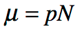
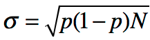

week 2
Aggregation
No Label

Philip Anderson
Princeton Physicist
Wrote a Paper called 'More is Different'
emergent properties
actions
single rule
family of rules
preferences
how to add up
Central Limit Theorem
Binomial Distribution
No Label

No Label

sample means have normal distribution regardless of underlying distribution
independent variables
all have finite variance
Six Sigma
Motorola QA
+/- 6 sigma
Game of Life
No Label
John Conroy
Cambridge Mathematician
Group Theory
is an aggregation process
Rules
if OFF AND 3 Neighbours ON the turn ON
if ON then stay ON if 2 OR 3 Neighbours ON
emergent self-organisation
gliders
glider guns
counters
computation
2D cellular automata
Cellar Automata
No Label

John von Neumann
Manhattan Project
Hungarian-American Mathematician
No Label

Stainslay Ulam
Polish-American Mathematician
Manhattan Project
No Label

Stephen Wolfram
Mathematica & New Kind of Science
behaviours
Cass 1 - fixed points
Class 2 -alternation
Class 3 - randomness
Class 4 - complexity
No Label

simple rules combine to form anything
1D cellular automata
each row is state following clock tick and rules have been applied
No Label

John Wheeler
"It from Bit"
Universe is information-theoretic
American Theoretical Physicist
Manhattan Project
No Label

Chris Langton
Langton's Lambda
https://web.eecs.utk.edu/~mclennan/Classes/420-594-F04/handouts/Lecture-04.pdf
artifical life
complexity & randomness require interdependency
Preference Aggregation
preference odering
pair-wise voting
transitivity at individual level but not at aggregate level
Condorcet Paradox
Collective NOT rational
Each person rational
problematic
Decision Models
Normative - help us make better choices
Positive - predicitive
investments
technology
Model Types
Multi-Criteria
Probabilistic